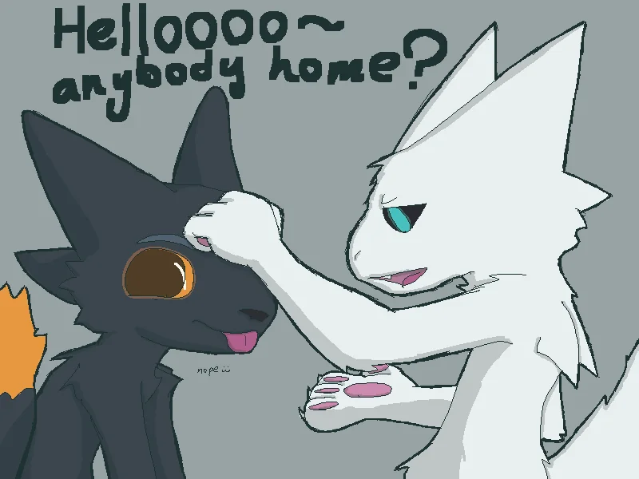

Crafting & INT basics
Discover basic workbench recipes and essential survival tools.
Essential crafts to aim for
The most important crafting recipes are things like foliage bags, flimzy knifes, wrenches and cleavers/macheties, iv bags, blood bags and chest drains, and special things like neral booster, material pouch, belt, backpack, and a pickaxe if you havent found a drill that takes batteries. extra things you can craft are things like batteries and helmets, but the things listed before it are more important early on. The faster you can craft items the better off you are. Using traps for metal is one of the best things to do early on and going forward
Intelect
Intelect is one of the 3 things you can level up and is extremly important for crafting. All items in this game (accept batteries) can break/perrish and really likes to mess with you in this reguard. Having a low INT can lead to you crafting with a weaker than 100% durability, actually break the item entirely and use up the recourses, or if your INT is very low for the craft, it can hurt you and make your Expie more sad (depressed). Crafting anything adds XP to this INT level as well as finding blueprints. The higher INT you have, the better your crafting and trading will go durring your run.
